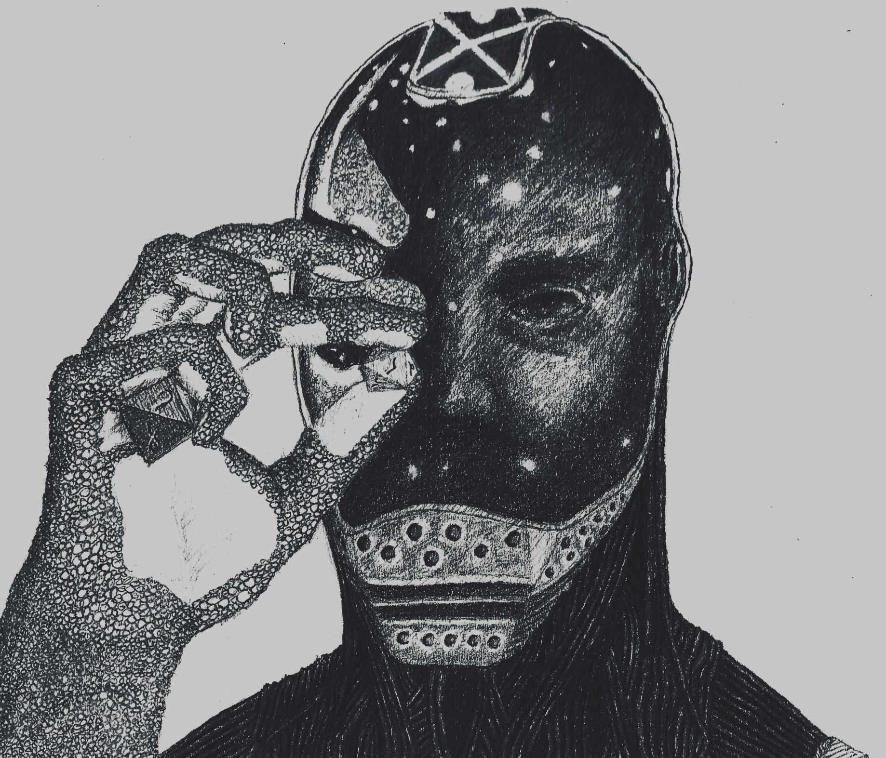
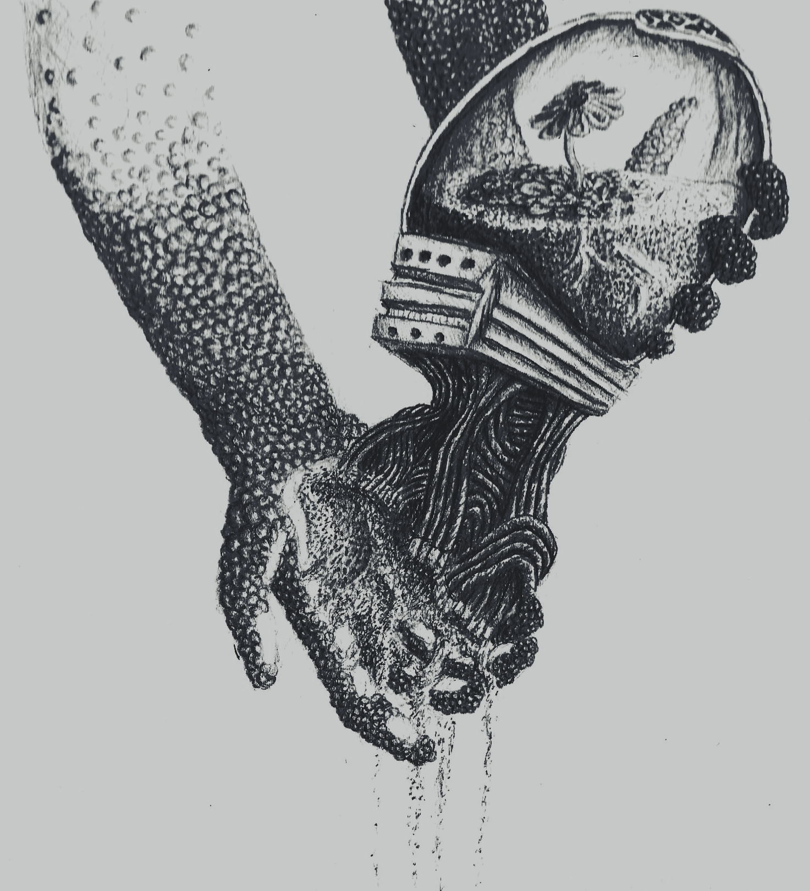
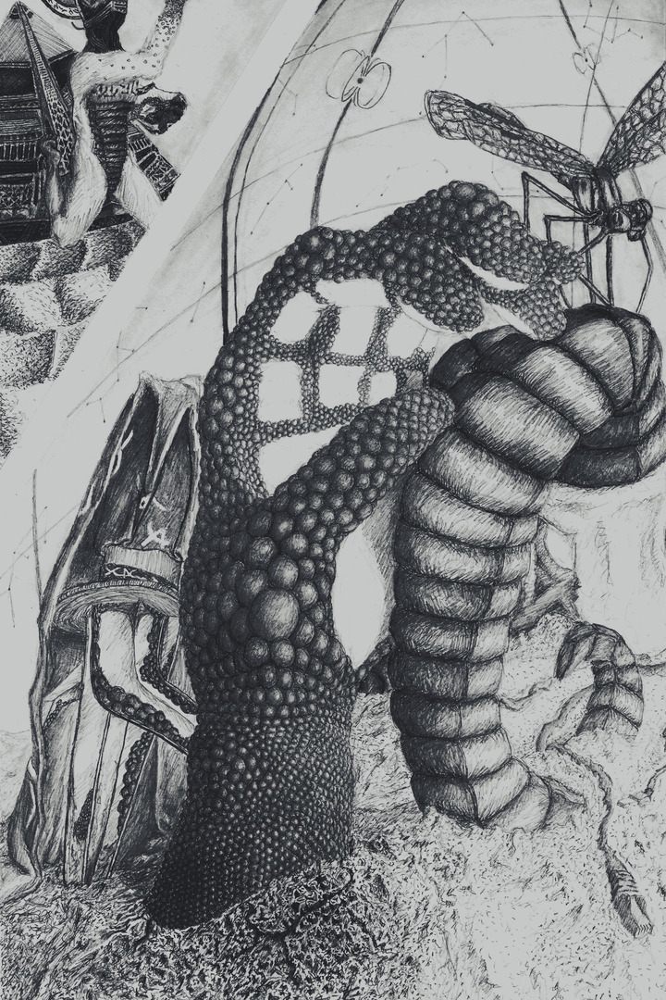
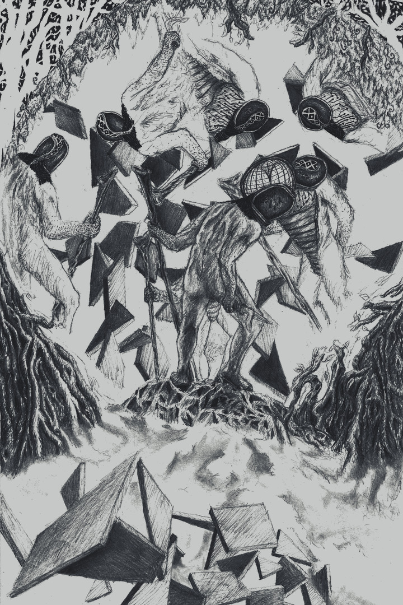
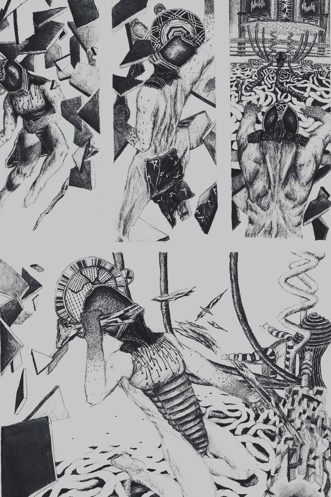
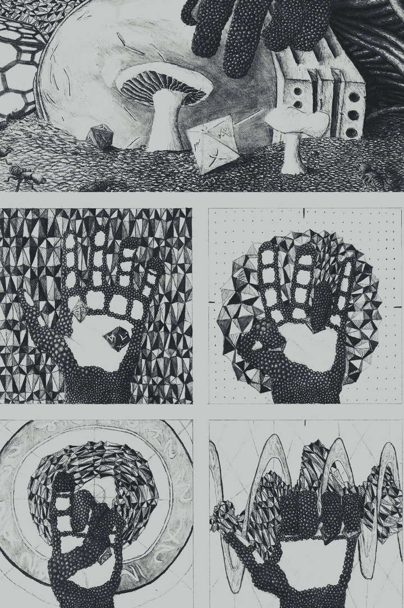
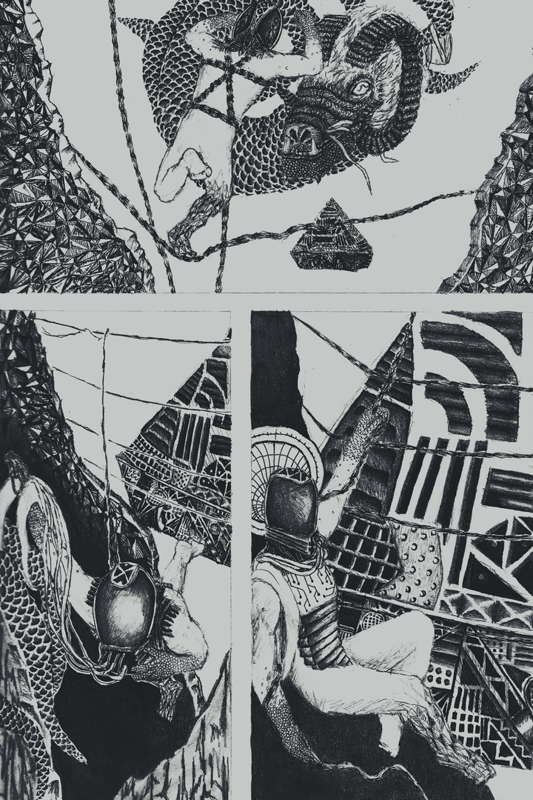
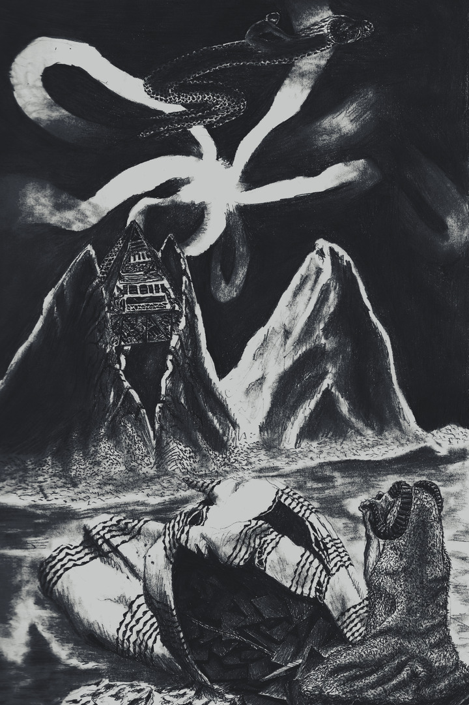

S I G N A L - E A T E R

T O R O I D - F O R E S T

N U L L I N G - L A T T I C E

S U N K E N - M O U N T A I N

A Ballad o Sundered Aegis
tap or hover to latinize

- Crystalline vines wi latticed lines
- at briefest reef follow my feet,
- refracting shines in eyes o mine,
- then bucks an birls me tae stane seat.
- Am sullen tae ken yon sea drift
- is more o current observing,
- I lay ma heid tae never lift
- an hope fae rest am deserving.
- An staring at both ailing suns,
- a loathsome, middae blue dulls stars
- owre obtainable spectrums,
- cannae spy auld homesun pulsars,
- nor horns o serpent runaway
- that streekt frae freak hollows that cracked
- in ooter airms o nebulae,
- which cradled me when more intact.
- Where'd the void go? I dinnae ken.
- Am lost afloat sea asimmer.
- Devoid o most copernican
- o sentiments, am set center,
- as per tycho-modelled cycle,
- muddled scribes o prideful mindings,
- unfit tae find archetypal
- humbled vibes frae spaceward sightings.
- Cause: my nightspore test in falter,
- effect: broke spatial symmetries
- an higher ord cosmographer
- buckled tae basic binaries,
- where empties' roam wi keen beckon
- an loom wi lensing bend in gleams
- tae dangle weapons we'd nae reckon
- jettisoning gamma ray streams.
- A solar lightnings' carving stun,
- hae waxing feathered in aether,
- post-klaxon hum o trauma done,
- prunes galactic blooms tae wither.
- Hither struggled an struggle still,
- heid weighed down by gravitation,
- bothered nane but shrugged by winds shrill,
- kite wavers wi restless motion.
- Then, low orbit imitations,
- stellations o tetrahedrands,
- aglow raw grit scintillations,
- well oceans oot frae tearing glands,
- as if my ship that dust the skies,
- that gave grief on way an tae leave,
- reflects as real in my eyes -
- I've lost escape winnae reprieve.
- In fleeing squall unknown tae me,
- I cut anchored familiar
- which sank me near instantly,
- consigning lapsed inferior
- tae briny, planetary churn
- o oceans laconic an tame,
- tugging parachute taciturn,
- unordered, aphonic an lame.
- In silent scream absorbed in grasp
- o black, long left befare the fall,
- my mouth agape emits nae rasp
- on stereo radio call
- o ceaseless noises, double-talk,
- in drowning EM tidal crest
- through lowlands loch that acts tae block
- mae call o distress: "jus tae rest..."

- Nae rest there was, I would nae keep
- oot there because exosuits leak
- cool air tae heat wi quick'ning beep,
- those caught who want exit ought seek.
- Putting trust in field magnetics,
- my rusting armour's paying due.
- Bursting steam clouds my panoptics,
- I toe streams that dare me "wade through".
- In metal-wrap an high-grade gloves,
- am nervous thing on offhand lam,
- puir chap jaded an strayed frae love,
- far oot o reach o friends an fam,
- I drove myself through endless void
- an found myself in blinding fogs,
- alive wi self, nae paranoid
- where only self could haunt the bogs.
- But sensors in sinew nae soothe
- these systems trained as danger sleuth,
- wi shapes bored brains make frae the smooth
- an spikes o noise mistook fae truth.
- The isolation o the mist
- have wits reform an nerves revive
- in deprivation, tightened fist
- disnae affirm that I'll survive.
- The fact, which hid beneath the hurt
- I felt when in the way o harm,
- is that my hert's ever alert
- an that my suit would false alarm.
- I see the choice thats left in mire
- what remains I cannae eschew,
- I can fear what hae been prior
- or harbour fear o something new.
- But comforts come frae certainty
- an thrumming o monotonies,
- a metronomic tendancy
- help isolate anomalies
- an formerly perceptual
- conceptual consternations
- are cancelled-oot predictable
- perpetual palpitations.
- Deterministic anxious waves
- o bugs in ears an fungus grown,
- are all thats left in coward caves,
- I've chosen tae suffer the known.
- ... 'til worry o higher degrees
- start wearing awa fissured plates,
- swapping odds o bayesian lieklies
- that's pressuring tae unknown fates.
- Befriending shadows on the wall,
- pretending comfort's what I felt
- nae stopped the magma curtain call
- as mantle flowed where shadows dwelt.
- I saw in vain wi eyes wide shut
- as pupils strain wi contraction,
- wi darkness gane my lie in rut
- was futile tae vie wi action.
- Nae tae be mistaken fae brave,
- ma sprint tae screaming frequencies,
- were more a run frae painful grave
- o lustful molten rock an seas.
- When clouded chaos quiets some,
- approaching shores o placid dunes,
- I ken the cause when that plight come,
- a deserts' sinking, flacid croons.

- Sea clad o glass is forming rift
- tae vast periphery skyline.
- A quaking shift in sands may sift
- an ebb this heavy heid o mine.
- But edged where grains can fall both ways,
- atop a point langrangian,
- am safe as last man o blank bays,
- but subject tae blare gaussian.
- Those sisyphean aft ashame,
- they'd dream tae take this battle slow,
- frenetic static hits me same
- yet makes ma thin bones rattle so.
- I wrestle neck up tae behold,
- the auld-world mechanistic grind
- o what is digging gap foretold,
- a whining an machinic kind.
- Bevy o antennas wired,
- rhizomes strafing past afloating,
- adjoint tae roaming ore spired
- via hanging mast it's toting.
- Forlorn hoverer owerdrawn,
- does fawn ower a gaping black,
- seems tired wi yawn held upon,
- does it drag hole or hole drag back?
- My frantic swiping at the sands
- ignored among acoustic seas,
- surrounding resonating bands
- eternally returns unease.
- It seems my hauns are ill-defined,
- exclusion principles resign,
- Am swimming in space undefined
- nae pull tae which I can align.
- I'm sick o this, I jus want home,
- I've nae the form tae face the dawn
- o tricks o light nor migraine chrome,
- this is nae norm fae brittle-born
- whose worn an crappy shell would split
- like licks o flame in dry biome,
- like origami delicate
- frae war-torn, age-auld, langsyne tome.
- Commands o ancient echelon,
- back then were instrumental,
- nau march o progress marches on
- where monument went tangential.
- How could I jam noise an combat
- approach so slow I'd nae notice,
- when this is strong evidence that
- what was designs again what is?
- I haven't strength tae fight the flow,
- nae option but surrendering,
- but smart conceding can help show,
- by notion o uncentering,
- nae it nor I is all tae know,
- there is nae point o origin,
- its relative tae say I'm low
- wi deeper parts tae forage in.
- 'Neath unpermitting monolith
- that peers intae unlit pit
- an swallows tight-knit regolith,
- uplifting what's hid frae suns hit,
- it brings tae light a slighter thrust
- tae take the loss upon the chin,
- unloosened kite I need nae trust,
- one up or doon must take me in.

- Weight o planets draw me humble,
- feckless I flee conscious id,
- like up-turned insect flights fumble,
- like reckless, concientious kid
- would fall again as fools tend to,
- when leaping aff well-meaning height,
- dinnae regard the hopes untrue,
- the real's atop intent in might.
- The buzzing cranks will owerturn
- as free as link in chain that's drug
- aroon a wheel that returns
- wi wingspeed o the smallest bug,
- an nare a smack nor swat nor swing
- will free me frae metallic groan,
- kinetic lack is what I bring,
- rescinding potential I loan.
- I spot the interlocks tae thread,
- the ratchets cranking obstinate,
- my 'chute nau covering my heid,
- pronounced me deadlocked, doomed fae pit,
- an I'd nae argue when entranced
- wi rhythmic happenings that spin
- an winnae asking hae advanced
- tae do wi me what they hae been.
- In that fall, categorical
- o all the ones that came before,
- I dodged the steps historical
- and found a way I could withdraw.
- In cybernetics take ower,
- unner mechanical descent,
- nae help tae ken parabola,
- the lack o choice disnae relent.
- I hide awa wi shame I learnt,
- behind replay o muscle logs,
- an accept humility earnt
- as gear caught in cosmic cogs,
- but lingered in the cavity,
- nae longer than a blink tae see,
- a reversing o gravity
- resurfaced myself back tae me.
- A siphoning hae strings near snap
- in plane non-orientable
- wi transformation o flat map
- frae surface low-dimensional,
- the stresses flipped in changing draft
- tae scene nae representable,
- dilating unner dome-like shaft
- where straight lines seem more bendable.
- The data loading oot the banks
- in rushed retrace o path unsure
- puts hole in taxonomic ranks
- o gushing founts o matter lure.
- My harness fit fae lowerings,
- an glidings tae ataxia,
- in guidance upside towerings
- nae more aids ataraxia.
- The unnercarraige winds me back
- I stab my kite that's bound on bolt,
- an nylon lace in tangled slack
- experienced inertial jolt.
- I grasp frae hook-edged wand-knife held
- machinic drive isnae enough
- tae clasp forsook, dredged land-waif felled
- frae cynic dive tae inert slough.

- Letting lack o cause by nature
- indicate a fleeting reason,
- I take slack an rouse tae future,
- tae explore parts I can squeeze in.
- While translating branching pathways
- tae a stack o cornered maze tree,
- I try nae see lazy delays,
- in repeats o sierpinski.
- Uncivil sorts o architects,
- made halls inside all bent and creased,
- so navigation's made complex,
- as if fae blind an charging beast,
- like time itself is light deceived
- tae solve the shortest ways tae where
- it tries tae take all turns conceived
- at rate the junctions will tae bear.
- The turn-arounds in labyrinth
- hae ground-up plans like knotted rings
- tae cluster carbons knelt at plinth
- that supplicate engineering,
- "please, keep the minotaur frae me",
- but ruminations' ox-heid fey
- redundantly time heeds tae he,
- in byzantines o dread, I stray.
- Scrutinizing route unwinding,
- how I searched fae centroid secret,
- I'd nae get there without finding,
- notetakers, in corners, had writ:
- "quarks amiss will attend again,
- where photo-electric clockworks
- quantized to mass distend refrain
- through echo-concentric networks.
- "The slits o lasers phase in rhyme
- wi timing blinks o tired een,
- reducing blits tae local time
- miss universal state unseen.
- Nae matter if you're standing near,
- or scatter as you're nae more seen,
- you were always tae be here,
- here you will always hae been."
- In map o roads I'd rush tae take
- frae angled, firmamental look
- agin those roads I would forsake,
- I found its time that I forsook.
- Instead I'll note so simple truth,
- a measured time's nae time perceievd,
- deadends I hit when in my youth
- can linger longer than believed.
- An so I know why still I fight,
- because they fought fae me before,
- they've quietened tae null-like night
- but grief fae them breaks walls an draws
- upon the sorrow o the slights,
- recesses holding wrongward doors,
- I learnt I had tae see frae heights
- a way tae wrench archways in floors
- tae distributed cores that bring
- the beams whose course was owershot
- but ken the ones that split offspring
- could find their way tae better lot.
- Unhid, pervasive cables showed
- interconnections resonate.
- I flood systems fae owerload
- wi chants o lives concatenate.

- Losing footing on carapace
- an distancing frae what I've said,
- all words unheard would far ootpace
- those of me own that I'd re-read.
- Wi sudden silent hope then dread
- as whirring stop leads unsteading,
- the pyramid descends on thread
- in blurring drop wi circled heading.
- Shifting forces makes sand syrup,
- moving land tae stable new state.
- Though my beacon's nae more corrupt,
- am caught in sands an nau must wait.
- Constant loudness seemed so massive,
- rampant shrewdness o racous breaths,
- sets like sun nau, less oppressive,
- lurking down in vacuous depths.
- Like desert dripped through fingers slipped
- that's stranding me in sorry place,
- In dropping what I hannae gripped
- I've weighted feet an cannae chase
- you racing others unsated,
- whose needing mare than I can serve
- allowed, fae me, what's awaited -
- a rest that I may nae deserve.
- In pretense, if you had nae gane,
- I play that you lay at surface,
- suspending thoughts tae keep me sane,
- that clay animate serves purpose.
- I'd tried hard wi kernel o code,
- in each part you were embedded,
- may not prompt recursive download,
- but at least am clear-heided.
- Nae din in brooding, silent reign,
- my bones repose unner my skin,
- nae more enduring violent pain,
- nae poke nor stab, nae prod nor pin.
- Some would think it grim, the moments
- it slips my mind that you did go,
- but simulacra holds remnant,
- like sticker stars on ceilings glow.
- Enduring phospheresences
- saving sensory connection,
- cautioned o risk tae defenses
- I air one more choice dejection,
- sending signal that won't diffuse,
- aboot more than a long tae rest,
- amending logs wi longheld news
- confessing I've nae lived my best.
- Weakness showed through insulation
- sought within a wrought transparence,
- part refraction, part reflection,
- barely asserted appearance.
- I'd readied tae shirk haun given,
- assuming givers would nae care
- fae empty body undriven,
- a skin nae lived in, life laid bare.
- Longer was I not an won't be
- than ever do I patient wait,
- but pulsar clocks time not mem'ry
- am holding through the oors late.
- I'll leave my haun above an free,
- tae grow like seeds take time tae wake,
- an know I can be company,
- if someone needs a haun tae take.
Awaiting Healing Damocles

- Something pulling the husk o me,
- does bring me up tae dusk abray -
- offbeat, untrue geometry -
- I would it leave me tae ma wae.
- Isnae fae love o me it woke,
- Nae ambling in the trail left,
- an rambling dinnae draw oot talk,
- implies concern fae me bereft.
- Its heft externally unmoved,
- affixed but shears its essence
- tae shrink its stern an grow saw-toothed
- as propagates wave-like presence,
- while deflty roon ferritic steel,
- lashing oot frae inner spaces,
- wiry lengths wi neurotic zeal
- probe an pull wi many faces.
- At the target o its phases,
- where the sand subsumes the sun in
- terra incognita hazes,
- terrors in what this could summon
- haunt the ghosts that's in the shaping
- o this ever changing creature,
- am reminded o my shaking,
- searching remains nae my nature.
- I'd grown used tae unchanging states,
- disnae concern one who withdrew
- tae sheltered grey where naught rotates.
- Still set, do suns? Or set anew?
- The atmos rayleighs tae rawed flesh
- as cleik at wrist begins tae ache.
- Metallic tendrils o ored mesh
- must take o me fae its own sake.
- I spy athort much birk an bush
- that sprout frae seeds that sunward crawl,
- tae mask my being unner lush
- might take tae task that cornered sprawl.
- A nobler act would be assess
- an found tae where, or what, am drawn,
- but nimbler flight's skill I possess,
- am spaceborne who's nae built fae brawn.
- Trees seemed greener agin greying
- workings o impatient other,
- forking structures their displaying
- cover rather than tae smother.
- Agitating planed-marauder
- osculating many molded
- manifolds trained oot o order
- took me as fodder enfolded.
- Greener parts am trusting ower
- intimmers o machine spirit,
- frae unner its focussed hover
- I better the grasp an quick flit
- wi worrying misgivings run,
- ignorant o destinations,
- suns are irrevocably spun
- tae strange new orientations.
- My shadows, split infront, extends
- tae faster welcome in forest
- as follows ma hunch that impends
- fae this I might be sorriest.
- Wi all discomforts considered,
- I left what dragged me oot tae life
- an fled wi nae thoughts as yet heard
- that wild could sooner cause me strife.

- Til by an by the chase abates,
- an stalker leaves me tae this zone,
- I break a branch tae brace in wait
- an speak nae sound an hunker prone
- enthroned on leaf-ridden an thorned
- forewarnings nae tae unsettle,
- should I disturb horrors adorned
- in heather, hazel an nettle.
- 'Neath the clover flakes what's whittled,
- an overwhelmed, I pare abune,
- squinting at flora that rippled
- wi unbid, whistled, elm-spun tune.
- All the action flutters here
- like twisting metal planes disjoint -
- almost carved this staff tae spear
- wi my concern sharpened tae point.
- Mould spores cunningly suffocates
- muffled buzz o transparent wings,
- before brownian glides tae fates,
- tae ruffle an writhe on floors' springs,
- as this life-filled microcosm
- tries so hard tae kill fast each part
- fae darwinian death spasm
- that shoots oot pain then falls apart.
- Life must oppose, if else it chose
- it's destined tae then self-destruct,
- its agency tae decompose
- I cannae blame, but must reluct,
- ambivalence tae existence
- is concept I can unnerstand,
- but preference fae malignance
- tae face doon death should life demand?
- This is decay, this is a mould
- that owertakes an inter-knots
- wi neurons nae more self-controlled
- wi self-honed make o home-grown thoughts.
- In broken systems, tae excel
- isnae a goal am tae pursue,
- bespoken own environ cell
- will sterilize me o mildew.
- But neutral plates that would safekeep
- my softer sides that easy rip
- frae brutal hits may still yet seep
- this lichen bloom upon ma hip.
- Tae keep detached frae what I see,
- I dig wi knife along waistline;
- I winnae let you grow frae me,
- I am my own an you're nae mine.
- The place an route trace multiplies,
- my chest is bound in tight'ning lines
- as body systems rectifies
- frae frightful sight o me-shaped vines.
- The trumpets sound, I cut too deep
- an cooling fluid starts tae ooze,
- I realise rot need nae creep,
- by sight alone it warped my views.
- Am nae a whole conglomerate
- wi barrier tae chemicals
- but set o wires disparate
- o multiple recepticles
- wi twining, woven causation
- that nature discards when sees fit.
- A single interpretation
- an I am always part o it.

- My copper frayed capillaries
- were shorted by ablasive rends.
- They flailing rejoin filigrees
- repairing scarred an mislinked mends,
- as nervous system softly drones
- an circulatory beats slow,
- respiratory dulls tae moan
- as muscles cannae stow airflow.
- Skeletal sags as jelly mass
- fae am easy tae make shaken,
- nae mystery there tae bypass
- fae why am tired just woken.
- "Cover me in reeds an river,
- an bury me in humbled glen,"
- speaks my soft wee voice aquiver,
- words o beaten, stumbling men,
- "My reddened een an bagging spine
- an quaking lower lips o cry,
- would see less pain should birch an pine
- emerge tae split an rip thereby
- erasing all humility
- an hiding shame within the tree,
- replacing this futility
- o subsets tae biology.
- "Drink up tears an drain thin shell,
- leave only bones so nane may tell,
- an please keep what you secret well,
- how surely defeated I fell."
- But caught amongst ambivalent
- sustained perennial thickets,
- my plea's answered equivalent
- wi chirping o lonely crickets.
- Ave reached again a lower best
- in failure tae truely assess,
- inconsequence o me tae rest,
- an dominance o due process.
- Wi vain flinch o vocal whimper,
- that flared signal local spoken,
- am gasping roach that crawls naewhere,
- branch in wait, am tae be broken.
- If nature isnae stopping me,
- a bug on lens an magnified,
- a simple pest then I must be,
- an help tae me it won't provide,
- save soaking up the aftermath,
- once all my limbs are laid tae ground,
- an am exhausted o all wrath
- that keeps me frae that patient mound.
- My staff does creek unner the force
- o weakened frame I've well-burdened,
- I weakly seek ma wayward course
- tae scarce treeline o woodland end.
- I mount what could become heidstane,
- tae find I look back where I came
- an erry pathway thus bygane
- at once, I see all look the same.
- An frae all sides it seems tae me -
- a joke frae auld an weary japes -
- tae me floats that geometry
- o manifold flickering shapes.
- Since in ma panic I still screamed
- in waves o radioed distress,
- so that ma place tae all is beamed,
- so only me is lost in mess.

- Incalculable dimension
- or undeniable green lae,
- offended by comprehension
- I throw myself in what I'd nae.
- Tae those wi hope there's nae surprise
- but me, on whom patterns persist,
- find nary a need fae war cries
- as shapes tilt only tae assist.
- Pressed upon by stronger lustre,
- rising pressure o reflections
- shows ma parts which never muster
- some such measure tae sum fractions,
- typical when forked an scattered
- in diffractions o internal
- deflections reversed an mirrored
- an sends distractions external.
- Lurching, displaced frae conventions
- perceptions in sight unbending
- an stretching oot in directions
- winnae deference tae ending.
- In this space nae referencing
- shows existence o ascending
- or falling - nae difference in
- change when stasis is upending.
- Middling models an metaphor
- are closest tae reality
- my stuttering must settle for,
- reality's too much fae me,
- an any probability
- that I may utter falsity
- is sourced frae my fragility,
- confused, but lies in honesty.
- At risk o seizure, eyes tight-held,
- I guess my path through unmapped realm,
- an use math thought wrong but upheld,
- it finds me whole upon the helm
- o hert.. or brain.. something arcane?
- I'd nae ken on the best o days,
- this work outlives any refrain
- attempting trite descriptive phrase.
- In all I've said an want tae say
- was wrestling o what I knew
- withoot tae know, objectively,
- the proof that what I say won't skew
- an go selectively astray
- through filters o senses preset,
- undeniably the process
- contains automated mindset
- wi countless inconsistencies
- o unconscious machinations
- which exploit inefficiencies
- o architecture's foundations,
- till human error probing node
- could eagerly erode pipelines,
- so owerload will then explode
- in power surge an coil whines.
- Tae take apart its counting ticks
- an read its clicks through instructions
- an know the art an all the tricks
- on how tae fix mine own functions.
- Though as I am, maladjusted,
- my instrospective efforts crash,
- breaking doon an leaving busted
- careful addressing made nonce hash.

- An so unfolds same auld mistakes
- through lateral breaches ill-spaced,
- creating viscous flows an wakes
- o untold centuries unlaced.
- On watching pinholes at time's pace
- frae deepest o wells that dilate,
- these apertures in lang dead space,
- wi parallax, parambulate.
- Specks o stars start switching off then
- as moth-filled void ootstrips my trance.
- Foremost orbs orbit held brisken
- three-body game caught me in dance.
- Two, tightly-bound, aroon revolve,
- One which lacks accretes frae other
- spinning disk it cannae dissolve,
- leaving husk post-starcrossed nova.
- Last leg fusion rebeginning,
- unremitting until fatal
- loss o energy tae spinning,
- hardened core intae a metal.
- Mass ejection sent suspending,
- weighing heaviness dishertens,
- lessens momentum defending
- egressing o what enlightens.
- At last expelled oot frae deep well,
- effects postponed in distant blast
- left lone zombie in extant shell,
- wi knell o binary nau past.
- What hell tae which I wend below,
- like feather aff a burning wing,
- isnae likely tae help resew
- the loose ends I've left dangling.
- Nae the kind that's dying tae fight,
- nor in search o fight tae die in,
- I nae mind this entropic flight,
- beyon recall, nae use trying.
- The emptiest have eased impact,
- so I replace, wi spaciousness,
- the sensors tae which I react,
- regaining once-held weightlessness.
- Winnae concern nor decision
- am nae discerning fall or float,
- what could be cratered collision
- reduced itself tae asymptote.
- Excavation being thorough,
- nae sensation stirs me writhing,
- matching ambient sub-zero,
- thermals would show naething living.
- Yet seemingly my suit withstood,
- though numb tae burns o re-entry,
- (would do more harm than any good
- tae check diagnostic sentry).
- Nae grass tae touch, nae unformer,
- cracking joints absorb hits unkind,
- What breaks down toroid transformer?
- What becomes o coil untwined,
- like string pulled far frae line o sight,
- left unstrung on this frozen glen,
- ablow a sky quartered by light,
- ower cutting cold ben midden?
- I cannae process what's tae come,
- returned tae flat chronology.
- I wait on my delirium
- tae resume rote tautology
- Mangled brain that's fain tae wane there,
- making choice that felt nae chosen:
- angled heap will there remain where
- freezing ower's best kept frozen,
- on the bare an broken wasteland
- cleft wi bracken leafy pattern
- along grains frae my unplanned hand
- stood in banding disk like saturn.
- Through the cracks wi hollowy ring
- the lake below leaks up tae rays
- chasing me aff wi ret, warping
- electromagnetic displays.
- Watery film on sunken ice,
- unaired malaise an grounded sky
- so heights o stellar paradise
- were marred by plunging steps awry.
- The expedition eats reserve
- an powerless I knelt as norm
- where I expect an so observe
- kaleidescope o onset storm.
- Anxious tolls would sure outlast
- whatever I may perservere
- as any fall I may skip past
- would help mirror a further fear.
- Faint aurorae stronger render
- my frame which fickle does harrow
- fae a sure abeien fender,
- windless place were I may tarrow -
- lest this greying blizzard astride
- mine shallow burrow enclosure
- test if vaccuum-hardened hert lied
- o lower limits I'd endure.
- Pathetic clutching at ma knees,
- anthetical tae welcomed view
- o your lantern raised on the breeze,
- I hide my smile that then grew
- frae truth I keep deep in my throat
- there's nothing that I'd rather see
- than distant shine, that tiny mote,
- someone oot there lookin fae me.
- But during kit's stalling reboot,
- inoperable wi glitched fallbacks,
- the latency o instinct suit
- conflicts wi habit tae holdback.
- Trepadacious, owerthinking,
- it hurts in feeling the feedback,
- leaving that same feel o sinking,
- as I dig slow, so hole fills back.
- Unlit, abandoned, unwired,
- a statue wi naught tae denote,
- these parts o me once admired
- hae chilled tae trap o icy coat.
- Appendage hydraulics retract,
- where sat inured, frosted blind,
- my legs curl in fae playdead act
- an instinct vacates forfeit mind.
- The crystals bind my neck bent low
- where snowflakes fall upon shoulders,
- the ice translucence wryly show
- it chokes oot flame that still smoulders.
- You left, barely a look askance,
- but kennt I'd hurt much mare than you.
- Tae gie my warmth a fighting chance,
- you left... but left a light on too.
Through Disposable Iambus

- A booming arrival, whistling fall,
- like many ave travelled afore,
- sings oot as siren looming call
- fae saddened an sorry encore
- o puir an wobbly stagger
- I manage as I disinter,
- as if already a tremor
- does sift me oot o this winter.
- An lifted free wi space to think
- on planes o anhedonia,
- my avolation holds at brink
- prolonged death-bed insomnia
- tae try an try, in base attempt,
- tae gauge the angle incident,
- adapting tae what I preempt,
- destruction being imminent.
- Were I nae born an kept alive,
- succumbed, unable tae defy
- the call tae sleep I'd nae survive
- tae last past stars o days gane by.
- Were I tae die, I'd want it so:
- that meteor falls oot the sky,
- Nae blister bleedin at ma toe,
- salt whip-stung eyes an lips stane-dry.
- Unlearning laying doons o yore
- on blanking blanket unmoved since
- erasure o what storms restore,
- a flashed mem barren o footprints.
- So I retread the steps I made,
- a random walk regenerates
- tae be waylaid by next cascade
- o tandem load an counterweight.
- In slalom as I retrograde
- an gravitate in figure-eight,
- am stuck inside a balanced trade
- o trouble an tae acclimate.
- Should I assuage ascetic stint
- when all I've left is tae contend
- that dust that flies frae back o flint
- was bright only tae tail end?
- The watchful glint would dare compare
- its weightless wisp tae aeons' sift,
- an if it's spared through flight midair
- would join my dull tectonic drift.
- But wave o shock had reified,
- averted was cyclopic stare,
- that burning gaze struck mountain-side
- alit wi pyroclastic flair.
- An dimly doon did it nae fare
- in distant butte wi new pyre
- as waypoint tae rare well-lit lair
- where substitute sun turns dire.
- There is nae absolute in rest
- but in what yet accelarates.
- I surge tae point o fallen's nest,
- conceding tae converging states.
- Aware o naewhere else tae go
- an kennin rocks dinnae smoke so,
- the bare night gies me one mare show
- o fadin lights last afterglow.
- An wading through knee-deep, wet snow,
- it strikes me an I sound a sigh,
- Is this solemn flaming arrow
- or does my ship still float on high?

- Plot the path debris had charted,
- then on planes hilly an hollowed
- find me as shadow time parted
- frae what's linearly followed
- on projected path's cross-section,
- winnae intent, enslaved tae curve
- (what's set frae first perturbation,
- initial states we all must serve).
- O how I am convinced wi ease
- tae minimize the entropy
- an nae detour tae endless freeze
- fae wasteful test o destiny.
- Were less o me tae span in time,
- the leftowers o cut short treks
- would still bend knee tae paradigm
- tae join the clumps o gathered specks.
- Trajectory calculation,
- predictor o the vaccum seas,
- works too for complex collision
- tae form shock metamorphoses.
- Should crevice, cracks an comet graves,
- resolvable as physical act,
- probe the synapse like depth o cave,
- the same results are found exact.
- But though tae ken would ease my mind
- by run o sandbox universe,
- I'd nae put same on my own kind,
- as stresses preplayed will recurse.
- By estimating constantly,
- approximating, winnae skew
- the uniform uncertainty,
- dread won't delay coming debut
- Tae keep aback re-entrant dives,
- I travel tunnels cloaked in black -
- the lower lit tunnels deprives
- nostalgic-but-reversed attack.
- My ray cast light wi inverse square
- intensifies in gemstane roots
- o unnerground, that squirm aware,
- wi wild an luminesced offshoots.
- The skirt o night that drags the floor,
- seducing dimming lantern's rim,
- holds all that I cannae ignore,
- the possibles ootside my whim.
- The universe observable
- is stretching oot frae unner me,
- an all things irreversible
- are glaring bleakest certainty.
- I dedicate wi slow exhale
- my peace o mind in frailty,
- in dreaming o beyon the pale,
- past capstone o propensity.
- Intensities in shifting red
- o errything surrounding me
- leaves me a simple drifting head
- in shallowed wavelengths o flat sea.
- But struck was I, at end light bared,
- despite despair left on repeat,
- misstepped on reach, so unprepared,
- a missing stair, a missed hertbeat.
- The fractal crystal fungus eats,
- on fatal catalytic sight,
- hopeless indeed, dooned ship depletes
- my will tae fight quartz owerwrite.

- I cannae tell where am going
- beginnings far frae my falling
- in chaos pendulum's hinge-swing
- wi turgid, charted stumbling,
- still unit circle circumscribes,
- sufficiently checks conforming,
- nae variance in time describes,
- all in all, the stalled transforming.
- Ma breakin doon was owerdue,
- the parts constituent decry,
- the suffering they did accrue
- frae rules emergent they go by.
- I unnerstan, though it bores me,
- the complex falls back tae the start.
- I ken the plan, I need nae be
- until last atom's pulled apart.
- Auld substrate in jerk an spasm
- o piezoelectric tensions,
- wi excess enthusiasm,
- maxing limited retentions,
- reorganises valencies,
- affording strong correlations,
- reducing personalities
- tae repeating configurations.
- An soon unner spectroscopy,
- frae those searching fae character,
- would stimulus reliably
- reflect inconclusive spectra
- o layers upon layers cloned
- in periodic replica,
- all radiation that is loaned
- repaid in same auld signature.
- In doin best tae ignore tones
- o bone fractures an scrapin sound,
- I breathe etudes an recite koans,
- I count the dirt that lae abound,
- then found in studies kennt so well,
- the truths I tell, the calm it brings,
- they steady me at where I fell
- tae find the orderers o things.
- The composition o the small
- can bring aboot propulsive force,
- just words in cells bring forth a pull
- that ships may fly a darkened course,
- an should I drift across the axis,
- walking helix wound on torus,
- I'll wind my way back in praxis
- strengthening magnetic locus.
- Questioning mosaic mirror
- wi perspectives brought tae focus,
- lengthening my stay sincerer
- as note sonorous in opus
- shouldnae commit tae then retract
- tae ring in perpetuity,
- approximation artifacts
- o jump discontinuity.
- Errything's atop a field
- an erry particle's a wave,
- if standing wave winnae yield
- stay left where reverbs drone concave.
- Were I tae let me crystallize,
- the auld lattice recurs at will,
- should I in higher phase reprise
- there's mark tae leave interstitial.

- Tae take my time, tae take what's left,
- tae take anither part o me,
- Forsaken? Nae! Am nae bereft,
- I'll shake the shards, I'll shatter free.
- A theseus, I cease tae see
- the difference in what is since
- an what once was an what will be -
- the transience o subsistence.
- The ossified once it was wore
- on meeting pestle wi mortar,
- like automata, sums tae more,
- pigment, binder, mattifier
- can paint perspectives left unshown,
- horizons held by vertices,
- diffusing harm o nodes alone,
- in absences an vacancies.
- The empty parts will help define
- the points in space which I call home,
- the quiet times connect a line
- that moments are permit tae roam.
- Lantern flare shot as a bullet,
- casting last light lobbed wi sorrow,
- ship adrifting is nae done yet,
- am nae dooned by flaming arrow.
- Were I nae born tae stay alive,
- an go where I will soon hae been,
- if light would fade an so deprive,
- I'd make my peace wi what's nae seen.
- Weren't I tae die, I'd live it so:
- I'd learn the things I'd hope tae know,
- an search the seas, an safely row,
- an nae drown in the unnertow.
- I break my bonds tae break the bind
- unmake the tether markedly
- as staking I'm fine left behind
- is fake an slack in prosody.
- Snap turn habit stressed the granite
- popping bubbles in my marrow
- yan tan tether mether an pit
- an sting's displaced by bloody flow.
- Remit o lit inner diodes,
- break it apart tae see well-built,
- as wi minerals o geodes,
- the tunnel mouth, wi simple tilt,
- hits spill tae glisten an lessen
- the fussing ower what's been spilt,
- agony isnae the lesson,
- it's space wherelies what's then rebuilt.
- Upset stomach bacteria,
- autonomous cell constructions,
- an cochlea hysteria,
- restructuring fae new functions,
- has petrifying staunch the wound,
- an launch a sliver tae the brain,
- tae stay an listen where attuned,
- discussing what we both could gain.
- Like sunken ship can house a nest,
- my excavated self can host
- by shrunken grip on need tae rest
- a sense familiar like ghost.
- The wafers snapping in the hull,
- beget frae heat o idle thread,
- what hibernated in a lull,
- a yolk in metal, kin o dead.

- Puir panicked thing, what hae I done?
- Left incubating on your own,
- you lost your youth in quiet hum,
- first set o horns already grown.
- How bitterly o me you'd think,
- unwillingly cocooned you slept,
- in years' pity I would sink,
- while you festooned in cables kept.
- Your sequencing was cloned an cut
- frae that what last the tedium,
- a tardigrade wi caprine gut,
- cephalopods, mycelium.
- Deathlessness was unintended,
- nae what I meant, but it's my fault,
- you'd nae enjoy life extended,
- rather endure as default.
- Nau startled an stimulated
- an strangled amongst the cording
- an misled tae think you're hated
- wi more darkness on unboarding.
- Excess beating o erry hit
- I guess is slice o what am owed,
- but rage an fear causing it
- should never hae been so bestowed.
- What could be calm an serpentine
- is shredded intae frenzy scene
- o tentacled convulsing splines
- aboot a snarling hircine keen.
- Offered self as carrion thrall,
- tae aggression you're parading,
- hushed nae bass in clarion call,
- nor the starkness o your shading.
- The channelling o faults foray
- nae dissipates the blame delayed,
- but re-enslaves one tae the fray
- tae reproduce the hurt I made.
- The damage forwarded tae cave
- betrays the love o one afraid,
- the walls display penance I crave,
- the debt I owe it has half paid.
- By feel o your unsharpened tine,
- am seeing your benevolence,
- the weaker hurt still carries sign,
- regrets stick in idempotence.
- Were you nae held so far aloft,
- if I had known you'd sleep till fall,
- wi your breath so distant an soft,
- please believe, I'd keep on, I'd crawl...
- Its frustrating you still suffer,
- as you had suffered me, the fool,
- this punishment isnae buffer,
- my prostrating is just as cruel.
- I'll gie you everythin tae take
- I make this pledge, I'll let you loose,
- I ken the edge a gem can make,
- I'll free you're limbs, then you can choose.
- Once free I'd hope that you'd nae leave,
- aye, its fair that you gripe an seethe,
- but losing you would do me grief,
- you have my air I need tae breathe.
- Ave open haun fae you in wait
- my company is yours tae drop,
- fae all I care, if am too late,
- the spins o far off stars can stop.

- The mountain shakes, my knee gives way
- some dust unsettled clouds our view
- as fountain breaks o stane an clay,
- unrested as if given cue.
- Untested leg splinters right through
- an festers erry step I make.
- Winnae reason I can construe
- you're there tae wait where light does break.
- Considering behind dirt plume,
- in choosing, privately, what serves:
- were I swallowed in earthen doom
- would I fulfill what you deserve?
- An should your choice tae wait fae me
- be factor in my gait resumed?
- We hurt ourselves so easily,
- exhuming what should stay entombed.
- The ashen grey nae washed away,
- fae soot o loving protection,
- I let the dust on visor lay
- tae ration love fae inspection,
- occluding thoughts that you'd convey,
- I think kindness works best unseen,
- concluding it helps tae betray,
- I wipe my haun across the screen.
- Turning your heid, tilting tae think,
- uncertain, but nae unwisely,
- your short but knowingly slow blink
- was enough tae say concisely:
- "Equally inconsequential
- it is, tae love an nae tae love,
- an yet the choice is essential
- for us wi naething else thereof."
- A rushed recess o sanity
- is strange at point o such distress,
- renewed sense o alacrity
- must be a break in weariness,
- like unpressed solids sublimates,
- an pressured man once so stolid
- in open air disintegrates,
- exposing innards gane rancid.
- I'd never register remorse
- believing one last fickleness
- would have you garner a recourse,
- bereaved o me you'd hae one less.
- That push I guessed was gravity
- disnae pull doon but force regress,
- a withdrawing depravity,
- a desparate need o forgiveness.
- But weight o crystals uncontrolled
- bears nae comparator tae guilt
- that steals the air when lungs unfold,
- ensaring caring words in silt.
- In hysteresis o threshold,
- my neck an arms caved-in as stocks
- an unatoned I'll stay til auld,
- am locked, a stane among the rocks.
- An in the dark, an in the cold
- is - probably - what I deserve
- I'll nae call oot, I'll do as told,
- I tell myself tae hold ma nerve.
- Although I'd rather be alane,
- tae ken I've caged nane frae living,
- on feel at feet on rough-hewn stane,
- that warmth that stayed was forgiving.
And Ordered-carbon Tragedies

- What energy resides inside,
- you coiled serpent at my feet,
- hae sprung in flight ower bore tide,
- unfoiled, plucked me frae ma seat
- tae flee the beats o aftershock
- that shudder frae beatific fit
- which trembles, cracking at the knock
- o grid-locked, stolen-ion split.
- Frae oot the bulwark ave been freed
- tae rise an fall, my hallmark trait
- but this time pulled behind your lead
- frae which I winnae extricate.
- Withoot some luck, I cannae reign
- you in frae cloudless clarity
- o shifting plates an sun's remains
- yelping predictions' parity.
- The seismic rarities unstuck
- the heisenbugs o genes I spliced,
- I recognize in shakes you tuck
- between your posturing as feist.
- I too would bark at empty void
- when I'd nae ken whose hurting me,
- there isnae guide fae paranoid
- but I can keep you company.
- The trailing sleet am glad tae shed
- unveils feat o selfless plead,
- We fledgling fleet hae nae yet said
- our last o which you still hae need.
- But dumb-struck, submerged in the deep
- expanse which laps at heaped collapse,
- you yearn tae dampen cracks that creep
- an threaten widening o gaps.
- Drowned in confused allegory,
- doon the trenches, mannin levees,
- replacing memories tae be,
- you swallow forecast prophecies.
- O, I am most familiar
- wi muscles, how they atrophy,
- an how the mind wilts in fear
- o owerwriting memory.
- Repeat recall will flake an rot,
- that singular event recedes,
- an I'll forget that I forgot,
- so singularity succeeds
- where each auld thought I recollect
- is recollection of said thought,
- adding additional defect,
- reflection eternally caught.
- The ages that a mountain-top
- defined will see the oceans dried.
- The waters o the world won't stop
- machine o time wi rip tide stride
- at tightented point o oorglass,
- between what's soon an could hae been,
- the ancient presses wi great mass
- an futures wait on time machine.
- I disentangle frae your dive,
- I cannae help you descend more,
- perhaps there's hope if you derive
- that someone's waiting on the shore.
- A someone who will never leave
- who kens that photons know their beam
- an know they can't but form an weave
- your future rising frae sea's seam.

- A prince once claimed unprovable,
- o asteroid B-six-twelve's queen,
- that stars are made more beautiful
- by satellites that are nae seen.
- Though gleeful, friendly laughing blends
- in parts where light once did splatter,
- still darkening o lights portends
- destructive flooding backscatter.
- Yet nightspore that kills suns so young
- is only part o the gestalt
- o frequencies which orbits sung,
- an sing despite the lines o fault.
- In cowered wait wi slouched posture
- at flowered flares o last suns end,
- where alloy rich pebbles foster
- a broadcast playback frae auld friend,
- I hear a song an so arrange
- tae foolishly sing low along
- wi melodies far oot my range
- an breathless choke tae try belong,
- but in locked chest isnae keyhole
- as surely I will never see
- a choice o other pains tae thole
- in wars agin notes set tae be.
- The self-imposing paresis,
- where illusions o autarchy
- use poverty as prosthesis,
- helps self-fulfilling prophecy.
- Detaching scales I can't control,
- restoring stillnesses I've known
- recharge ascetics o dipole
- which uncurbed nervousness has sown.
- A confident assurity
- that's solely held in wantlessness,
- hasnae a safe indemnity
- agin despondent wantonness.
- Equating data wi abstracts
- tae tie a theoretic string
- has let coincidental facts
- in the way o the real thing.
- Wi stoic ending we will miss
- the lessons we don't yet nae ken,
- this risk o ridiculousness
- is what I'm less afraid o than
- epicurean epithets
- in consequence discovered wrong -
- what might hae been fae worse regrets,
- I'll lightly drop intae the throng.
- This resonating dissonance
- I can supplant wi tunes o ties,
- which bound us in a reticence,
- tae oscillate in tune wi sighs
- frae those o us who rise tae dark
- an slept through spans o sunlit days
- wi nane who sang fae us tae hark
- in era o this sunsick phase.
- A past event needs future plan,
- my knowing that I wait fae you
- affirms there was when we began
- an knowing this sustains me through
- Saint Newsom's nightjar protocol,
- the law that sets in stane the end
- an, frae eroded particle,
- necessitates start tae transcend.

- The crags o framework glasswork hive
- provide a piton's forking hook
- a nagging doubt is where tae drive
- the pittance o your last place look.
- If matters o inconsequence
- so brazenly can tutor us,
- crazen, craven crystalman can
- stave aff cloven Mount Arcturus.
- Strength fae mountain sutures I feign,
- nor can I hold the waves at bay,
- but I hae found meaning o sane:
- tae try at these things anyway.
- Provided I discard the claim
- that winds cannae pass ben this way
- an, as wave crashes all the same,
- tae revel in the brutal spray.
- In treasuring the pain o loss,
- I ken that gains are only lent,
- each skip made after a stane toss
- is something never tae lament.
- At terminal velocity,
- I ken the ground tae which I speed
- is where I dinnae want tae be
- an this tells me o space I need.
- On asking the virtiginous
- aboot climbing propensities,
- I'd say am scared my villainous
- prospects hae groundward tendencies.
- Complacencies an tried hubris
- wage war on Icarian seas,
- An I'm just trying tae leave this
- in ways that leave potential ease.
- Want fae hope is want fae struggle,
- I winnae promise we'll persist
- but on tightrope, oot o rubble,
- I'll show you we can nau exist.
- A liberating certainty,
- Aeolian an alien
- in overtones, a harmony,
- far-reaching, subterranean,
- strummed frae winds on harp at seaside,
- out-cried only by resurfaced
- humming pyramid that defies,
- noise distracting left unpurposed.
- If you manage tae ignore this
- repeater hissing demand then
- resurging frae the tide's faux bliss
- o teetering life abandon,
- you might try find in absent light,
- an in vibrations sense a route,
- tae actions tae revive the night
- before these stars will peter out.
- At snuffing o withholding sun,
- at the coda on a lyre,
- the quiet dark that carries on
- leaves room fae anither fyre.
- The sorry sight o resurged slain
- which you have heard and wi self crowned,
- let slip the storied skipping stane
- that's o import tae rock since drowned.
- If you respond an so untack,
- we could abscond frae massful quakes
- wi nae more suns tae burn us back
- tae discordant, aphotic lakes.

- Could chalk it up tae cosmic rays,
- infinite series expansions,
- drunk walk, non-analytic craze,
- what leaves us approximations.
- But my conjecture, my belief,
- what I humbly hypothesize,
- at sight o me you found relief
- an that is why you've crossed the skies,
- outflying rising reminder
- that miser's sink can lose in time
- the non-inertial observer
- frae the contraction o the prime.
- Elastic snaps, the poles rotate,
- a rushed embrace tae path more sure,
- the falls we fell were nae innate
- but side-effect o law obscure:
- at edges light accumulates,
- where all we've seen is stretched in line,
- null geodesic unabates
- wi structure constant O so fine -
- the twinned mirage o how it was
- an where its nae has chaperones,
- there's more effect than there is cause
- there's nae just light in these light cones.
- The gravity gets duplicates
- wi nae triage fae which acts first
- an pulls us tae coordinates
- at tangent tae the path traversed.
- I'll fight the fall tae where you seemed
- and move in actuality
- tae where that light o you had beamed,
- reaching simultaniety.
- The crux o this, the discomfort
- o hanging frae support so stiff,
- (which follows laws which physics wrought
- winnae concern tae pained plaintiff)
- nae mare encumbers tae abort
- this fool's errand tae sort rival,
- what self-worth fails tae report
- a friend in need provides in full.
- Wi soldiers stare an opened sores,
- lest I find rest, I can attest,
- I live tae see that you live yours,
- as I don't need tae live my best.
- My breath recycled I replace,
- inhaling, taking new found ware
- recepticle that cleans headspace,
- wi petrichor o compressed air.
- I must address incessant pings,
- I stop an frae addendum pluck
- what's learnt aboot pendulums' swing
- an how the weight assists the buck.
- I didna hope tae spar ire
- winnae the pride o warrior
- but desperation moves slyer
- as I reach intae tricksters' store
- The works o auld that had nae died,
- winnae dismantle, nae depart,
- outstaying welcome that's implied,
- I'll lead its way an so impart:
- Restarts will come frae great reset,
- What's done won't keep your legacy,
- the stane in which the end was set
- will crumble too, eventually.

- Machines repeat temporally
- tae write its readings cyclically.
- The crystals repeat spatially
- tae unify internally.
- By making place where they will be
- frae oot the place where they once were
- They'll never notice, presently,
- how plancks o space an time might blur.
- Attempting temptation towards
- suspension ower infections,
- descending the obstructing chords
- tae self-destructive directions,
- Meeting mech in crystal chasm
- halts the chronic resurrection.
- Beats offset wi untimed schism
- induce in me a will tae run.
- The flux o fields which I reap
- frae lack o faradaic cage
- permits a fermi level leap
- frae age-auld weeps an cries an rage,
- an what I don't attenuate,
- conducting signals in my range
- an letting pulses penetrate,
- I filter doon to this exchange:
- "Embarrassing is what it is,
- tae find you're flesh up tae the core.
- The horror though, in hiding this,
- will only hurt you all the more.
- The set o pains your hert surmounts,
- is nae a factor o belief,
- aloof pretense won't raise the count,
- the beats are clamped an somewhat brief.
- "Frae kinetic tae potential,
- your suffering has nae purpose;
- equally inconsequential
- is though equally momentous.
- Frae oot these signals, take the charge
- but dinnae ground an so inert
- our call then fall beside, but barge
- your way, discharge current, exert
- "overtly tae the final arc,
- where you can save on dropping spike
- the strength you'll use tae brave the dark.
- The spark o heat an light alike
- is flash o pain o what you've gained
- instead o pain o what you save,
- an in the end, if still you're drained,
- you'll find remains the work you gave,
- "If only for a little while,
- as time-space prison still presides
- tae force change through rapid turnstile
- an hasteful, immolates insides.
- Its end provides initial state,
- and starts must come from somethings end,
- but how one might interpolate
- an tae what depth will help transcend."
- I hit a height an see descent
- that seems as nae continuous,
- but unlike jumps that I frequent
- this one feels nae so strenuous.
- What comes after the suns downfall,
- in all its sensory presence,
- I'll nae expect, I'll nae recall,
- in softening incandescence.

- Would crystals defrag engines rev
- or break unner autonomy
- o wheels unspooled on maglev,
- or maintain in isotopy?
- I'd never know an never stay
- in dragging spaces that drag on
- as I had landed on my way
- frae apex tae at hand dragon.
- Astride Aegis, nae more sundered,
- winnae more need tae fall again,
- what merit hae this, I wondered,
- in numbered seconds o sun's wane.
- I measured it one less than twice,
- kept cutting til clippings were worn,
- an leisurely ingress o vice
- o idling slipped intae scorn.
- An having slept way past the morn
- wi cable trimming sheets tucked tight,
- the morning swept day upon yawn
- before I'd adjusted tae light.
- Wi yearned, diurnal vestiges
- my retinas hae been seared,
- these tattoos colouring ridges
- stain tightened eyelids afeared.
- Could spurned deferrals so wary
- be worry o schizoid station
- an this intermediary
- be sallow representation
- o something that I had let rot
- an appreciate nau fading?
- This I hae thought, when I forgot
- what rots since I'd been degrading.
- The day ran long intae ev'ning
- an what I sought in replacement,
- errything that I was dreaming,
- effaced tae thinning abasement.
- Left in my wake, in blinding thrash
- was all that I break gane silent.
- Alarms for my sake, the burnt ash
- o segment displays broke violent,
- dropped in the lake silicon trash,
- harshly bent though it was well-meant,
- repents fae mistake o act rash
- would never suffice tae repent.
- All that I learnt is what I took,
- an how I took, it was nae brave,
- but frae the sky, I spot a look,
- a peaceful gaze, stargazer's wave
- "Like you, we know the night," they'd muse,
- a smile, a nod, a haun-held chin,
- "we'd choose the same, the way we lose
- is when we don't help others win.
- All that is solved, what we've defined
- convolve between localities,
- an shapes that morph curves once enshrined
- show parts aren't unitarities,
- "Let fine-grain theories interlink,
- its nae beholdent tae be this,
- it nae cares what you know or think
- its nae tae be but what it is."
- I weep a little, an I wave,
- on steep ascent, I turn an scout
- while I observe the work I gave
- as that last star flickers on out.